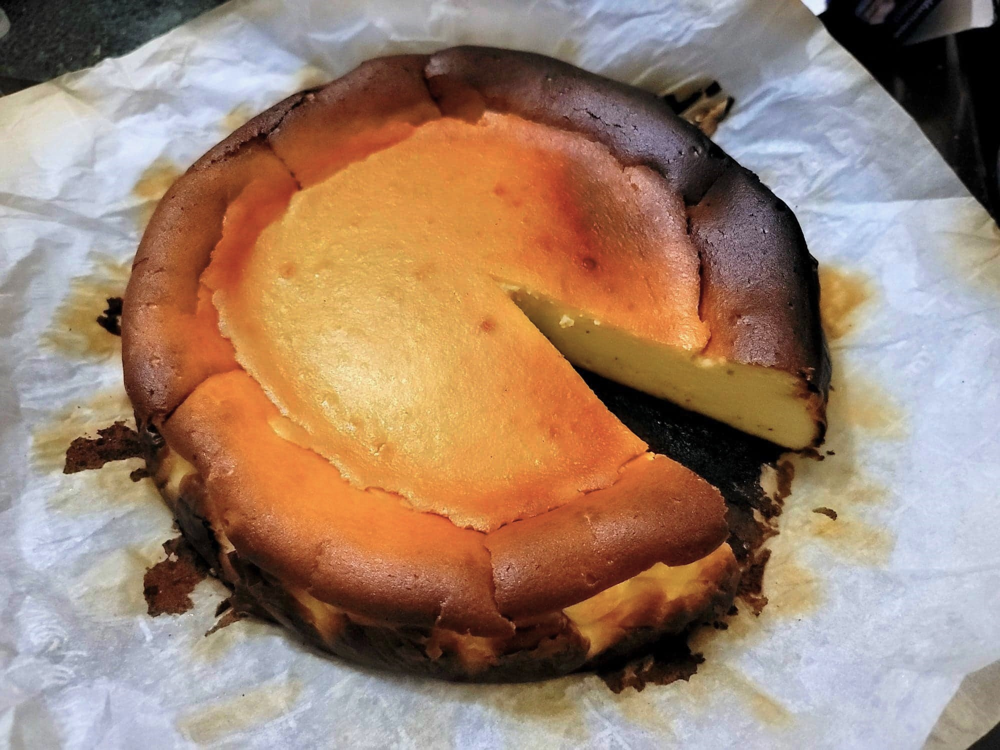

Basque Cheesecake

Ingredients:
- 2 lb Cream cheese, room temperature
- 1 1/2 cup (300 g) Sugar
- 6 Eggs
- 2 cups Heavy cream
- 1 tsp Salt
- 1 tsp Vanilla extract
- 1/3 cup (43 g) Flour
Instructions:
- Preheat an oven to 400 degrees Fahrenheit. Grease a 10 inch springform cake pan with butter. Then line with two 16x12 inch pieces of parchment paper, the second at a 90 degree angle from the first. Make sure that the parchment comes at least 2 inches above top of pan on all sides.
- Place the cream cheese and sugar into a large mixing bowl. Cream with an electric hand mixer until smooth.
- Add in the eggs one at a time while continuing to beat with the electric mixer, making sure to fully incorporate each egg before adding in the next. Then pour in the heavy cream, salt, and vanilla. Cream until fully incorporated. Sift in the flour and cream one last time.
- Pour the mixture into the baking pan. Bake for 60-65 minutes or until the cheesecake is toasted to preference. Then remove from oven and let cool. Once the cheesecake has cooled for a while, it will collapse and you can remove from the pan. Then let cool completely to room temperature and serve.